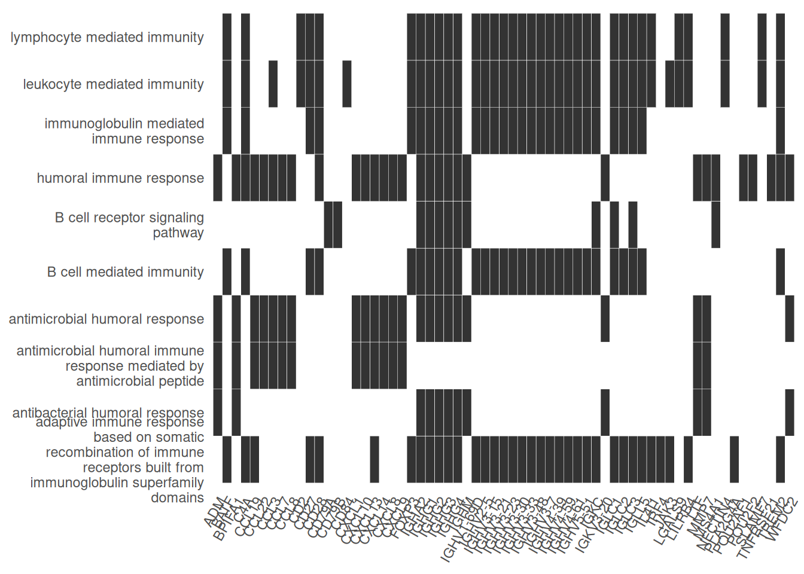

Getting started with clusterProfiler
2024-11-01
Last updated: 2024-11-01
Checks: 7 0
Knit directory: muse/
This reproducible R Markdown analysis was created with workflowr (version 1.7.1). The Checks tab describes the reproducibility checks that were applied when the results were created. The Past versions tab lists the development history.
Great! Since the R Markdown file has been committed to the Git repository, you know the exact version of the code that produced these results.
Great job! The global environment was empty. Objects defined in the global environment can affect the analysis in your R Markdown file in unknown ways. For reproduciblity it’s best to always run the code in an empty environment.
The command set.seed(20200712) was run prior to running
the code in the R Markdown file. Setting a seed ensures that any results
that rely on randomness, e.g. subsampling or permutations, are
reproducible.
Great job! Recording the operating system, R version, and package versions is critical for reproducibility.
Nice! There were no cached chunks for this analysis, so you can be confident that you successfully produced the results during this run.
Great job! Using relative paths to the files within your workflowr project makes it easier to run your code on other machines.
Great! You are using Git for version control. Tracking code development and connecting the code version to the results is critical for reproducibility.
The results in this page were generated with repository version 124a8d9. See the Past versions tab to see a history of the changes made to the R Markdown and HTML files.
Note that you need to be careful to ensure that all relevant files for
the analysis have been committed to Git prior to generating the results
(you can use wflow_publish or
wflow_git_commit). workflowr only checks the R Markdown
file, but you know if there are other scripts or data files that it
depends on. Below is the status of the Git repository when the results
were generated:
Ignored files:
Ignored: .Rhistory
Ignored: .Rproj.user/
Ignored: data/pbmc3k.csv
Ignored: data/pbmc3k.csv.gz
Ignored: data/pbmc3k/
Ignored: r_packages_4.4.0/
Ignored: r_packages_4.4.1/
Unstaged changes:
Modified: script/run_rstudio.sh
Note that any generated files, e.g. HTML, png, CSS, etc., are not included in this status report because it is ok for generated content to have uncommitted changes.
These are the previous versions of the repository in which changes were
made to the R Markdown (analysis/cluster_profiler.Rmd) and
HTML (docs/cluster_profiler.html) files. If you’ve
configured a remote Git repository (see ?wflow_git_remote),
click on the hyperlinks in the table below to view the files as they
were in that past version.
| File | Version | Author | Date | Message |
|---|---|---|---|---|
| Rmd | 124a8d9 | Dave Tang | 2024-11-01 | Using clusterProfiler |
Getting started
Install.
if (!require("BiocManager", quietly = TRUE))
install.packages("BiocManager")
BiocManager::install("clusterProfiler")
BiocManager::install("org.Hs.eg.db")
install.packages('ggarchery')Example data
Use An example differential gene expression results table.
de_res <- read_csv("https://raw.githubusercontent.com/davetang/muse/refs/heads/main/data/13970886_edger_res.csv", show_col_types = FALSE)
head(de_res)# A tibble: 6 × 6
ensembl_gene_id logFC logCPM F PValue adjusted_pvalue
<chr> <dbl> <dbl> <dbl> <dbl> <dbl>
1 ENSG00000000003 2.73 4.83 4.28 0.0684 0.109
2 ENSG00000000005 -7.00 0.541 17.6 0.00216 0.0138
3 ENSG00000000419 0.120 5.34 0.114 0.743 0.776
4 ENSG00000000457 -0.708 5.31 3.35 0.0993 0.145
5 ENSG00000000460 -0.897 3.95 2.66 0.136 0.186
6 ENSG00000000938 1.54 5.60 1.86 0.205 0.258 Gene IDs
The {clusterProfiler} package uses the enrichGO()
function for performing a Gene
Ontology over-representation test. The input for gene
is a vector of Entrez Gene IDs.
Our example data uses Ensembl gene IDs, so we need to convert these into Entrez Gene IDs. We can use the {org.Hs.eg.db} package provided by Bioconductor, which provides genome wide annotation for human, primarily based on mapping using Entrez Gene identifiers.
ensembl_to_entrez <- AnnotationDbi::select(
org.Hs.eg.db,
keys = de_res$ensembl_gene_id,
columns = c("ENSEMBL", "ENTREZID"),
keytype = "ENSEMBL"
)'select()' returned 1:many mapping between keys and columnsde_res |>
dplyr::inner_join(ensembl_to_entrez, by = dplyr::join_by(ensembl_gene_id == ENSEMBL)) |>
dplyr::select(ensembl_gene_id, ENTREZID, dplyr::everything()) -> de_res
head(de_res)# A tibble: 6 × 7
ensembl_gene_id ENTREZID logFC logCPM F PValue adjusted_pvalue
<chr> <chr> <dbl> <dbl> <dbl> <dbl> <dbl>
1 ENSG00000000003 7105 2.73 4.83 4.28 0.0684 0.109
2 ENSG00000000005 64102 -7.00 0.541 17.6 0.00216 0.0138
3 ENSG00000000419 8813 0.120 5.34 0.114 0.743 0.776
4 ENSG00000000457 57147 -0.708 5.31 3.35 0.0993 0.145
5 ENSG00000000460 55732 -0.897 3.95 2.66 0.136 0.186
6 ENSG00000000938 2268 1.54 5.60 1.86 0.205 0.258 clusterProfiler
The example data contains results of a comparison between cancer samples and normal samples; positive fold change indicates that genes were expressed higher in cancer. There are a lot of genes up-regulated in cancer.
de_res |>
dplyr::filter(logFC > 0, adjusted_pvalue < 0.05) |>
nrow()[1] 1440Instead of examining the list of up-regulated genes individually, which would take a long time, we can see whether these genes have common Gene Ontology terms more often than expected.
First we’ll get the top 500 most significantly up-regulated genes.
de_res |>
dplyr::filter(logFC > 0, adjusted_pvalue < 0.05) |>
dplyr::slice_min(order_by = adjusted_pvalue, n = 500) |>
dplyr::filter(!is.na(ENTREZID)) |>
dplyr::pull(ENTREZID) -> sig_up_genesCreate the background, i.e., the universe, so we can test for over-representation.
de_res |>
dplyr::filter(!is.na(ENTREZID)) |>
dplyr::pull(ENTREZID) -> the_universeGene Ontology terms are grouped into three ontologies:
- Molecular Function (MF)
- Biological Process (BP), and
- Cellular Component (CC)
Here, we’ll perform an over-representation analysis using biological processes.
ego_bp <- enrichGO(
gene = sig_up_genes,
universe = the_universe,
OrgDb = org.Hs.eg.db,
ont = "BP",
pAdjustMethod = "BH",
pvalueCutoff = 0.01,
qvalueCutoff = 0.05,
minGSSize = 10,
maxGSSize = 500,
readable = TRUE
)
head(ego_bp) ID
GO:0016064 GO:0016064
GO:0019724 GO:0019724
GO:0002460 GO:0002460
GO:0002449 GO:0002449
GO:0002443 GO:0002443
GO:0006959 GO:0006959
Description
GO:0016064 immunoglobulin mediated immune response
GO:0019724 B cell mediated immunity
GO:0002460 adaptive immune response based on somatic recombination of immune receptors built from immunoglobulin superfamily domains
GO:0002449 lymphocyte mediated immunity
GO:0002443 leukocyte mediated immunity
GO:0006959 humoral immune response
GeneRatio BgRatio RichFactor FoldEnrichment zScore pvalue
GO:0016064 30/385 196/17518 0.15306122 6.964484 12.587673 4.569415e-17
GO:0019724 30/385 199/17518 0.15075377 6.859492 12.461452 7.046005e-17
GO:0002460 37/385 382/17518 0.09685864 4.407194 10.092931 3.590714e-14
GO:0002449 35/385 368/17518 0.09510870 4.327569 9.670801 3.134308e-13
GO:0002443 38/385 466/17518 0.08154506 3.710406 8.889621 3.440135e-12
GO:0006959 30/385 299/17518 0.10033445 4.565348 9.321312 4.278292e-12
p.adjust qvalue
GO:0016064 1.319717e-13 1.180762e-13
GO:0019724 1.319717e-13 1.180762e-13
GO:0002460 4.483604e-11 4.011520e-11
GO:0002449 2.935280e-10 2.626220e-10
GO:0002443 2.577349e-09 2.305977e-09
GO:0006959 2.671080e-09 2.389839e-09
geneID
GO:0016064 IGLC1/IGHG4/IGHG2/IGHG3/IGHV5-51/IGLL5/IGHV4-39/IGLC3/IGHV3-23/IGHV2-5/CD27/IGHV3-30/IGHV3-48/BATF/IGHM/IGHG1/IGLC2/IGHV4-61/IGHA2/IGHV3-7/IGHV3-21/IGHV3-33/IGHV4-59/C4A/IGHV1-69D/FOXP3/IGKC/IGHV3-15/TREM2/CD28
GO:0019724 IGLC1/IGHG4/IGHG2/IGHG3/IGHV5-51/IGLL5/IGHV4-39/IGLC3/IGHV3-23/IGHV2-5/CD27/IGHV3-30/IGHV3-48/BATF/IGHM/IGHG1/IGLC2/IGHV4-61/IGHA2/IGHV3-7/IGHV3-21/IGHV3-33/IGHV4-59/C4A/IGHV1-69D/FOXP3/IGKC/IGHV3-15/TREM2/CD28
GO:0002460 IGLC1/IGHG4/IGHG2/IGHG3/IGHV5-51/IGLL5/IGHV4-39/IGLC3/IL4I1/IRF4/JAK3/IGHV3-23/IGHV2-5/CD27/IGHV3-30/CCL19/IGHV3-48/CXCL13/LILRB4/BATF/IGHM/IGHG1/IGLC2/IGHV4-61/IGHA2/IGHV3-7/IGHV3-21/IGHV3-33/IGHV4-59/C4A/IGHV1-69D/FOXP3/IGKC/IGHV3-15/PLA2G4A/TREM2/CD28
GO:0002449 IGLC1/IGHG4/IGHG2/IGHG3/IGHV5-51/IGLL5/IGHV4-39/IGLC3/IL4I1/IGHV3-23/IGHV2-5/CD27/IGHV3-30/SLAMF7/IGHV3-48/LILRB4/BATF/IGHM/IGHG1/IGLC2/IGHV4-61/IGHA2/IGHV3-7/IGHV3-21/IGHV3-33/IGHV4-59/C4A/IGHV1-69D/CD2/FOXP3/LGALS9/IGKC/IGHV3-15/TREM2/CD28
GO:0002443 IGLC1/IGHG4/IGHG2/IGHG3/IGHV5-51/IGLL5/IGHV4-39/IGLC3/IL4I1/JAK3/IGHV3-23/IGHV2-5/CD27/IGHV3-30/SLAMF7/IGHV3-48/LILRB4/BATF/IGHM/IGHG1/IGLC2/IGHV4-61/IGHA2/IGHV3-7/IGHV3-21/IGHV3-33/IGHV4-59/C4A/CCL3/IGHV1-69D/CD84/CD2/FOXP3/LGALS9/IGKC/IGHV3-15/TREM2/CD28
GO:0006959 WFDC2/IGHG4/IGHG2/IGHG3/IGKV3-20/CXCL14/POU2AF1/MMP7/CCL22/BPIFA1/CXCL9/CCL19/CXCL13/CXCL1/LTF/CXCL10/MS4A1/IGHM/IGHG1/POU2F2/CCL7/TNFRSF21/ADM/IGHA2/C4A/CCL3/CXCL8/CCL8/TREM2/CD28
Count
GO:0016064 30
GO:0019724 30
GO:0002460 37
GO:0002449 35
GO:0002443 38
GO:0006959 30Bar plot showing each enriched GO term coloured by the adjusted p-value.
barplot(ego_bp, showCategory=10)Dot plot showing each enriched GO term with associated statistics.
dotplot(ego_bp, showCategory=10)
Heat plot showing the enriched GO terms on the y-axis and the genes on the x-axis. Genes with the associated GO term are highlighted.
heatplot(ego_bp, showCategory=10)
goplot shows the gene ontology graph with the enriched
GO terms highlighted.
goplot(ego_bp)Warning: ggrepel: 1 unlabeled data points (too many overlaps). Consider
increasing max.overlaps
Another nice feature of {clusterProfiler} is that you can plot multiple gene lists together. We can create a list of down-regulated genes.
de_res |>
dplyr::filter(logFC < 0, adjusted_pvalue < 0.05) |>
dplyr::slice_min(order_by = adjusted_pvalue, n = 500) |>
dplyr::filter(!is.na(ENTREZID)) |>
dplyr::pull(ENTREZID) -> sig_down_genesPerform GO enrichment on two gene lists.
my_gene_list <- list(
up_gene = sig_up_genes,
down_gene = sig_down_genes
)
ego_bp_both <- compareCluster(
geneCluster = my_gene_list,
fun = "enrichGO",
universe = the_universe,
OrgDb = org.Hs.eg.db,
keyType = "ENTREZID",
ont = "BP",
pvalueCutoff = 0.01,
pAdjustMethod = "BH",
qvalueCutoff = 0.05,
minGSSize = 10,
maxGSSize = 500,
readable = TRUE
)
head(as.data.frame(ego_bp_both)) Cluster ID
1 up_gene GO:0016064
2 up_gene GO:0019724
3 up_gene GO:0002460
4 up_gene GO:0002449
5 up_gene GO:0002443
6 up_gene GO:0006959
Description
1 immunoglobulin mediated immune response
2 B cell mediated immunity
3 adaptive immune response based on somatic recombination of immune receptors built from immunoglobulin superfamily domains
4 lymphocyte mediated immunity
5 leukocyte mediated immunity
6 humoral immune response
GeneRatio BgRatio RichFactor FoldEnrichment zScore pvalue
1 30/385 196/17518 0.15306122 6.964484 12.587673 4.569415e-17
2 30/385 199/17518 0.15075377 6.859492 12.461452 7.046005e-17
3 37/385 382/17518 0.09685864 4.407194 10.092931 3.590714e-14
4 35/385 368/17518 0.09510870 4.327569 9.670801 3.134308e-13
5 38/385 466/17518 0.08154506 3.710406 8.889621 3.440135e-12
6 30/385 299/17518 0.10033445 4.565348 9.321312 4.278292e-12
p.adjust qvalue
1 1.319717e-13 1.180762e-13
2 1.319717e-13 1.180762e-13
3 4.483604e-11 4.011520e-11
4 2.935280e-10 2.626220e-10
5 2.577349e-09 2.305977e-09
6 2.671080e-09 2.389839e-09
geneID
1 IGLC1/IGHG4/IGHG2/IGHG3/IGHV5-51/IGLL5/IGHV4-39/IGLC3/IGHV3-23/IGHV2-5/CD27/IGHV3-30/IGHV3-48/BATF/IGHM/IGHG1/IGLC2/IGHV4-61/IGHA2/IGHV3-7/IGHV3-21/IGHV3-33/IGHV4-59/C4A/IGHV1-69D/FOXP3/IGKC/IGHV3-15/TREM2/CD28
2 IGLC1/IGHG4/IGHG2/IGHG3/IGHV5-51/IGLL5/IGHV4-39/IGLC3/IGHV3-23/IGHV2-5/CD27/IGHV3-30/IGHV3-48/BATF/IGHM/IGHG1/IGLC2/IGHV4-61/IGHA2/IGHV3-7/IGHV3-21/IGHV3-33/IGHV4-59/C4A/IGHV1-69D/FOXP3/IGKC/IGHV3-15/TREM2/CD28
3 IGLC1/IGHG4/IGHG2/IGHG3/IGHV5-51/IGLL5/IGHV4-39/IGLC3/IL4I1/IRF4/JAK3/IGHV3-23/IGHV2-5/CD27/IGHV3-30/CCL19/IGHV3-48/CXCL13/LILRB4/BATF/IGHM/IGHG1/IGLC2/IGHV4-61/IGHA2/IGHV3-7/IGHV3-21/IGHV3-33/IGHV4-59/C4A/IGHV1-69D/FOXP3/IGKC/IGHV3-15/PLA2G4A/TREM2/CD28
4 IGLC1/IGHG4/IGHG2/IGHG3/IGHV5-51/IGLL5/IGHV4-39/IGLC3/IL4I1/IGHV3-23/IGHV2-5/CD27/IGHV3-30/SLAMF7/IGHV3-48/LILRB4/BATF/IGHM/IGHG1/IGLC2/IGHV4-61/IGHA2/IGHV3-7/IGHV3-21/IGHV3-33/IGHV4-59/C4A/IGHV1-69D/CD2/FOXP3/LGALS9/IGKC/IGHV3-15/TREM2/CD28
5 IGLC1/IGHG4/IGHG2/IGHG3/IGHV5-51/IGLL5/IGHV4-39/IGLC3/IL4I1/JAK3/IGHV3-23/IGHV2-5/CD27/IGHV3-30/SLAMF7/IGHV3-48/LILRB4/BATF/IGHM/IGHG1/IGLC2/IGHV4-61/IGHA2/IGHV3-7/IGHV3-21/IGHV3-33/IGHV4-59/C4A/CCL3/IGHV1-69D/CD84/CD2/FOXP3/LGALS9/IGKC/IGHV3-15/TREM2/CD28
6 WFDC2/IGHG4/IGHG2/IGHG3/IGKV3-20/CXCL14/POU2AF1/MMP7/CCL22/BPIFA1/CXCL9/CCL19/CXCL13/CXCL1/LTF/CXCL10/MS4A1/IGHM/IGHG1/POU2F2/CCL7/TNFRSF21/ADM/IGHA2/C4A/CCL3/CXCL8/CCL8/TREM2/CD28
Count
1 30
2 30
3 37
4 35
5 38
6 30Dot plot with enriched GO terms by gene list.
dotplot(ego_bp_both, showCategory = 15)
sessionInfo()R version 4.4.1 (2024-06-14)
Platform: x86_64-pc-linux-gnu
Running under: Ubuntu 22.04.5 LTS
Matrix products: default
BLAS: /usr/lib/x86_64-linux-gnu/openblas-pthread/libblas.so.3
LAPACK: /usr/lib/x86_64-linux-gnu/openblas-pthread/libopenblasp-r0.3.20.so; LAPACK version 3.10.0
locale:
[1] LC_CTYPE=en_US.UTF-8 LC_NUMERIC=C
[3] LC_TIME=en_US.UTF-8 LC_COLLATE=en_US.UTF-8
[5] LC_MONETARY=en_US.UTF-8 LC_MESSAGES=en_US.UTF-8
[7] LC_PAPER=en_US.UTF-8 LC_NAME=C
[9] LC_ADDRESS=C LC_TELEPHONE=C
[11] LC_MEASUREMENT=en_US.UTF-8 LC_IDENTIFICATION=C
time zone: Etc/UTC
tzcode source: system (glibc)
attached base packages:
[1] stats4 stats graphics grDevices utils datasets methods
[8] base
other attached packages:
[1] org.Hs.eg.db_3.20.0 AnnotationDbi_1.68.0 IRanges_2.40.0
[4] S4Vectors_0.44.0 Biobase_2.66.0 BiocGenerics_0.52.0
[7] clusterProfiler_4.14.0 ggarchery_0.4.3 lubridate_1.9.3
[10] forcats_1.0.0 stringr_1.5.1 dplyr_1.1.4
[13] purrr_1.0.2 readr_2.1.5 tidyr_1.3.1
[16] tibble_3.2.1 ggplot2_3.5.1 tidyverse_2.0.0
[19] workflowr_1.7.1
loaded via a namespace (and not attached):
[1] RColorBrewer_1.1-3 rstudioapi_0.17.1 jsonlite_1.8.9
[4] magrittr_2.0.3 ggtangle_0.0.4 farver_2.1.2
[7] rmarkdown_2.28 fs_1.6.5 zlibbioc_1.52.0
[10] vctrs_0.6.5 memoise_2.0.1 ggtree_3.14.0
[13] htmltools_0.5.8.1 curl_5.2.3 gridGraphics_0.5-1
[16] sass_0.4.9 bslib_0.8.0 plyr_1.8.9
[19] cachem_1.1.0 whisker_0.4.1 igraph_2.1.1
[22] lifecycle_1.0.4 pkgconfig_2.0.3 Matrix_1.7-0
[25] R6_2.5.1 fastmap_1.2.0 gson_0.1.0
[28] GenomeInfoDbData_1.2.13 digest_0.6.37 aplot_0.2.3
[31] enrichplot_1.26.1 colorspace_2.1-1 patchwork_1.3.0
[34] ps_1.8.1 rprojroot_2.0.4 RSQLite_2.3.7
[37] labeling_0.4.3 fansi_1.0.6 timechange_0.3.0
[40] httr_1.4.7 compiler_4.4.1 bit64_4.5.2
[43] withr_3.0.2 BiocParallel_1.40.0 DBI_1.2.3
[46] highr_0.11 R.utils_2.12.3 tools_4.4.1
[49] ape_5.8 httpuv_1.6.15 R.oo_1.26.0
[52] glue_1.8.0 callr_3.7.6 nlme_3.1-164
[55] GOSemSim_2.32.0 promises_1.3.0 grid_4.4.1
[58] getPass_0.2-4 reshape2_1.4.4 fgsea_1.32.0
[61] generics_0.1.3 gtable_0.3.6 tzdb_0.4.0
[64] R.methodsS3_1.8.2 data.table_1.16.2 hms_1.1.3
[67] utf8_1.2.4 XVector_0.46.0 ggrepel_0.9.6
[70] pillar_1.9.0 yulab.utils_0.1.7 vroom_1.6.5
[73] later_1.3.2 splines_4.4.1 treeio_1.30.0
[76] lattice_0.22-6 bit_4.5.0 tidyselect_1.2.1
[79] GO.db_3.20.0 Biostrings_2.74.0 knitr_1.48
[82] git2r_0.35.0 xfun_0.48 stringi_1.8.4
[85] UCSC.utils_1.2.0 lazyeval_0.2.2 ggfun_0.1.7
[88] yaml_2.3.10 evaluate_1.0.1 codetools_0.2-20
[91] qvalue_2.38.0 ggplotify_0.1.2 cli_3.6.3
[94] munsell_0.5.1 processx_3.8.4 jquerylib_0.1.4
[97] Rcpp_1.0.13 GenomeInfoDb_1.42.0 png_0.1-8
[100] parallel_4.4.1 blob_1.2.4 DOSE_4.0.0
[103] tidytree_0.4.6 scales_1.3.0 crayon_1.5.3
[106] rlang_1.1.4 cowplot_1.1.3 fastmatch_1.1-4
[109] KEGGREST_1.46.0